Escolhas de hoje
Tudo isto já está no jogo: soltar em cima da borda, o míssil da mira com choro e gosma na tela, as talas do Alargar fora, os 13 níveis e as suas escolhas: botões colados no pote (B), nível 13 de lava, os sons do Estúdio e as skins (2 por nível na aba Skins da Loja, mais a Minha no editor de pixel).
1. Botões de reforço ícones novos escolhido: B
Escolhido: B. Na tela deitada e no computador a coluna encosta na parede do pote; no celular em pé fica a fileira embaixo da barra. Os ícones agora são formas cheias com um contorno só, iguais de 48 a 96 px, e o contador fica numa pílula. Só a placa fica torta; ícone e número ficam retos. O 5º espaço (prêmio) aparece tracejado desde o início, e a placa do prêmio é dourada. No celular em pé as três opções eram iguais; a diferença estava na tela deitada e no computador.
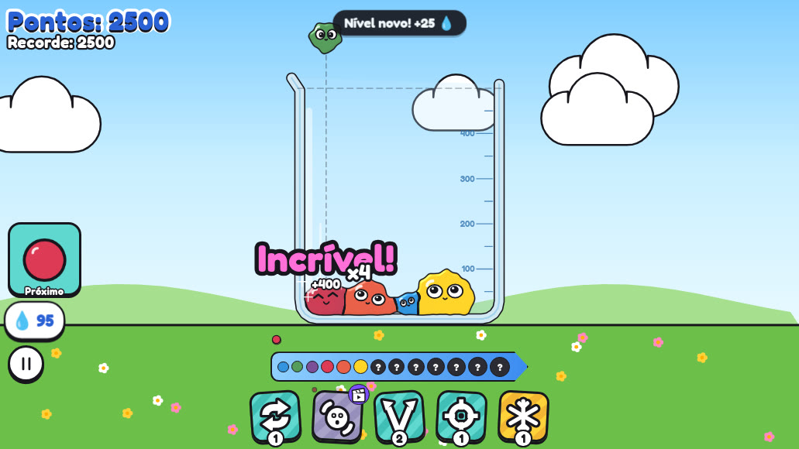
RéguaFileira embaixo em qualquer tela, como na referência. No computador o pote fica menor.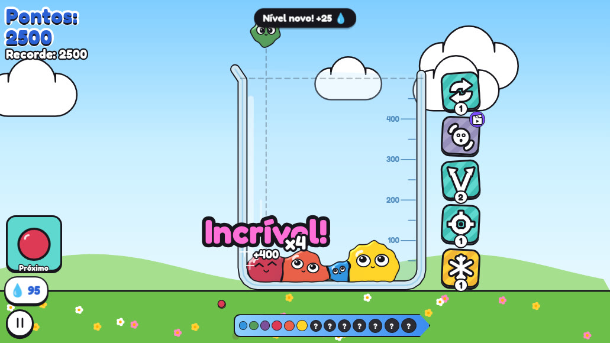
Colada no poteColuna encostada na parede do pote. O pote cresce, e o dedo vai do slime ao botão em menos espaço.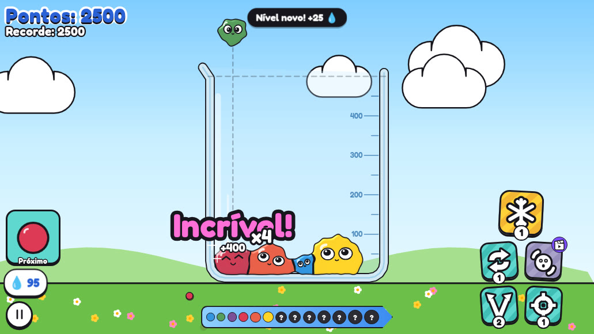
Grade compacta2×2 no canto de baixo, perto do polegar, com o prêmio maior em cima.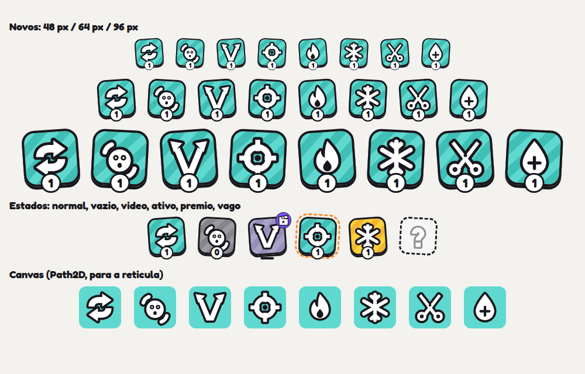
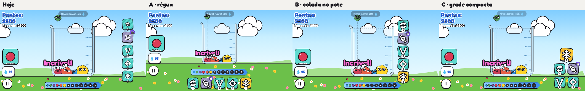
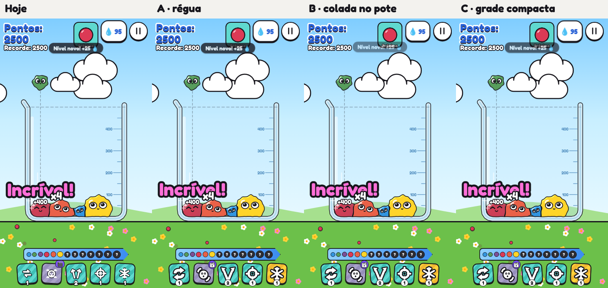
2. Visual do nível 13 o topo da escada escolhido: lava
Escolhido: lava, a crosta escura com rachaduras em brasa. Todos os níveis foram reescalados: o 13 tem o tamanho que o 12 tinha, e os do meio ficaram de 1% a 12% menores. A textura é animada e cobre a cor de base, como o arco-íris, para a frente de cor da fusão não virar lama. Use “Ver o nível 13 no pote” na prévia.
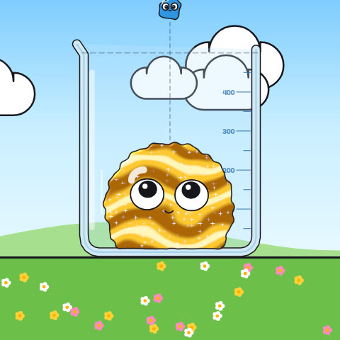
OuroOuro líquido com reflexos que escorrem e brilhos.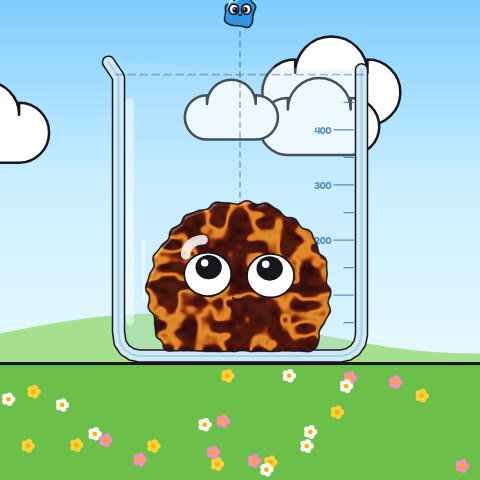
LavaCrosta escura com rachaduras em brasa que pulsam.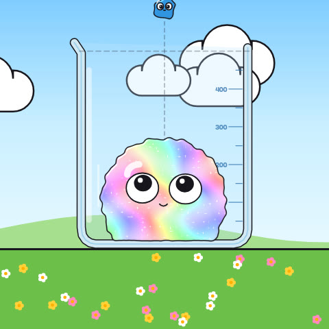
AuroraPérola furta-cor, com faixas pastel que mudam.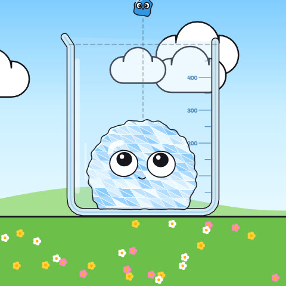
CristalFacetas de gelo com arestas claras que cintilam.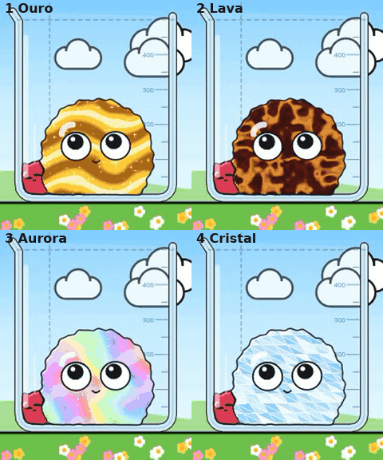
3. Sons e skins escolhidos
4. Míssil da mira já no jogo
Toque na mira: cada slime do pote ganha uma retícula de mira. Escolha um: ele chora, a retícula trava, o míssil sai do botão, faz a curva atrás do alvo e explode. A gosma voa na tela, gruda e escorre. São 0,75 s até a explosão e 1,3 s de gosma. Enquanto o míssil voa, o alvo não funde, e o fim da partida espera a explosão. Os outros reforços de alvo usam a mesma retícula na cor deles, com o ícone no canto. Para testar na prévia: 4 ou o botão da mira, e depois um slime.
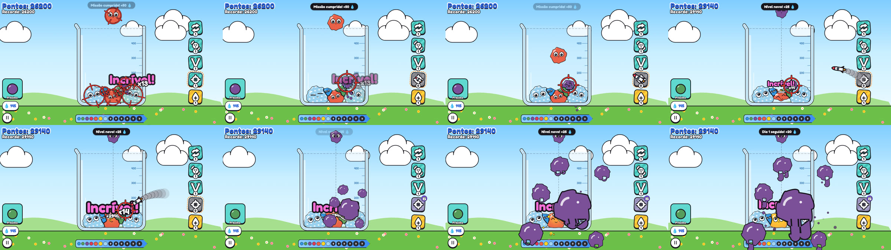
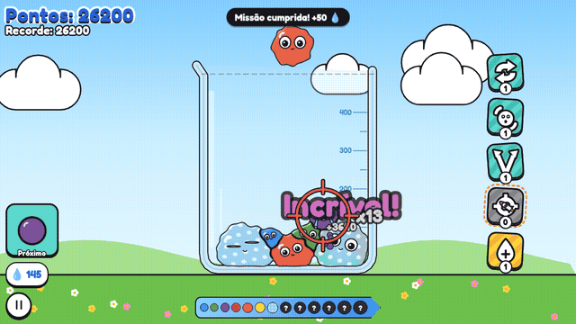
5. Soltar em cima da borda já no jogo
O centro do slime vai até o topo do vidro. Ele pousa na borda, balança e escorrega para dentro por uma guia invisível em cada parede (testado nos 8 cestos, normal e alargado, e no Duelo). O toque rápido agora solta da posição do dedo; antes, o slime caía de onde estava.
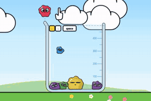
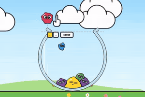